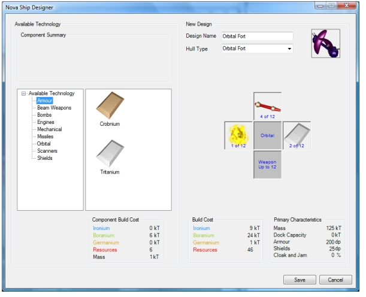
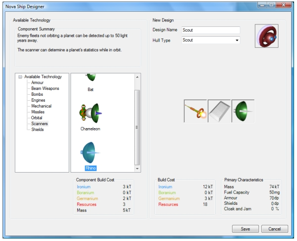

This screenshot shows the Ship Designer dialog of the Nova GUI.
In this example a starbase of the hull type Orbital Fort is being designed.
So far it has been populated with 4 laser beam weapons, a shield and some armour
(the population of the hull
is done by simple drag and drop as in the original Stars! game). Note that
the dock capacity of this starbase is zero so it cannot be used to build ships.

Here's another example of a scout being designed:
